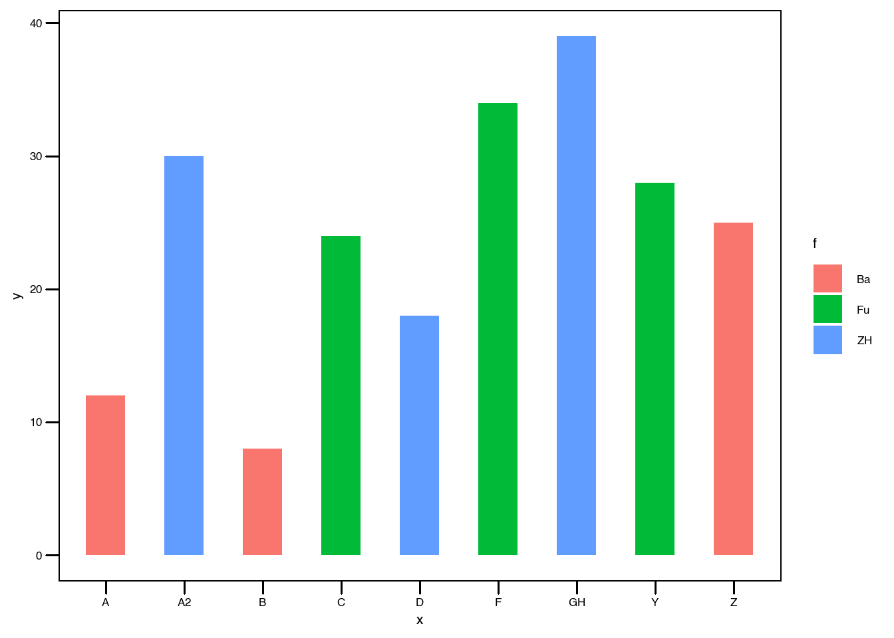

4 ggplot2 绘图问题解答
4.1 条形图绘制的难点
这次内容涉及到条形图绘制过程中排序的问题， 首先，我们先来生成一个简单的数据和基本的图像：
d1 <- data.frame(
x = c('A','A2','C','B','D','Z','F','Y'),
y = c(12,30,24,8,18,25,34,28),
f = c('Ba','Ba','Fu','Ba','Fu','Ba','Fu','Fu')
)
ggplot(d1,aes(x,y,group = f, fill = f)) +
geom_col()在这里，可以看到条形中底部的变量是按照字母顺序来依次排列：从 A 到 Z. 这显然不是我们想要的结果：一方面要将两组数据分开绘制，另一方面需要将条形从高到底排列。
针对这种，需要考虑的是：将变量x 转为因子，并设置因子的水平。
首先，很多人会想到：使用 forcats 包中的 fct_reorder()函数就可以顺利解决问题。
args('fct_reorder')## function (.f, .x, .fun = median, ..., .desc = FALSE)
## NULL将变量x 以变量f 作为分类依据，进行排序。
因此有：
d1 %>%
mutate(x1 = fct_reorder(x,f)) -> d2
d2$x1## [1] A A2 C B D Z F Y
## Levels: A A2 B Z C D F Yggplot(d2,aes(x1,y,group = f, fill = f)) +
geom_col()我们可以看到利用fct_reorder() 将变量x 变为了因子，同时因子的levels 的确是按照变量f来划分先后顺序的。但条形图从左向右看，其高度参差不齐，没有升序或降序的处理。
因此，单纯地利用fct_reorder() 并不能解决问题。
到了这里，很多人会想到另一个函数：fct_reorder2()
其参数如下：
args('fct_reorder2')## function (.f, .x, .y, .fun = last2, ..., .desc = TRUE)
## NULL相比fct_reorder(), 其多出了一个参数：y.
但是真实的效果如何呢？
d1 %>%
mutate(x1 = fct_reorder2(x,f,y)) -> d3
d3$x1## [1] A A2 C B D Z F Y
## Levels: F A2 Y Z C D A Bggplot(d3,aes(x1,y,group = f, fill = f)) +
geom_col()虽然，条形图从左到右降序排布，但不同颜色的条形混在一起，并没有实现两种不同颜色的条形的分开。
因此，这种方法也不行。那：有的人可能会想到：将```fct_reorder2(x,f,y)中的第二个参数和第三个参数颠倒一下位置：
d1 %>%
mutate(x1 = fct_reorder2(x,y,f)) -> d4
d4$x1## [1] A A2 C B D Z F Y
## Levels: C D F Y A A2 B Zggplot(d4,aes(x1,y,group = f, fill = f)) +
geom_col()但结果是：条形图并没有按高度排列，仍然是杂乱无章的；如果仔细观察一下x 轴上的刻度标签，就可以看到目前的排列顺序是在组内按首字母顺序排列的，从 A到Z. 这样的话，仍然回到了一开始的效果。
基于以上问题，我能想到的解决办法就是：手动设置因子的水平，但我们仍然需要一个排序结果，通过变量f和y实现对于x 的组内降序排列：
首先，使用到：fct_relevel()函数，
但在此之前，需要获得排序结果：
arrange(d1,f,-y)$x -> g
g## [1] "A2" "Z" "A" "B" "F" "Y" "C" "D"dd <- d1
dd$xx <- factor(dd$x,levels = g)
dd$xx## [1] A A2 C B D Z F Y
## Levels: A2 Z A B F Y C D使用 arrange() 进行降序排列。这样便得到了g,
接着可以使用 factor() 来重新定义levels, 或者你也可以使用fct_relevel().
d1 %>%
mutate(x1 = fct_relevel(x,g)) -> d5紧接着，进入绘图环节：
ggplot(dd,aes(xx,y,group = f, fill = f)) +
geom_col(width = 0.5) +
geom_vline(xintercept = 4.5,
linetype = 2) +
labs(fill = '') +
theme_bw() +
theme(legend.position = c(0.2,0.88))以上便是最终效果。
下面进入拓展环节： 我们可以考虑更多的分组情况：
首先是原始数据和最开始的绘图效果：
d1 <- data.frame(
x = c('A','A2','C','B','D','Z','F','Y','GH'),
y = c(12,30,24,8,18,25,34,28,39),
f = c('Ba','ZH','Fu','Ba','ZH','Ba','Fu','Fu','ZH')
)
ggplot(d1,aes(x,y,group = f, fill = f)) +
geom_col(width = 0.5) 
紧接着是实现最终效果绘制：
arrange(d1,f,-y)$x -> g1
d1 %>%
mutate(x1 = fct_relevel(x,g1)) -> d6
ggplot(d6,aes(x1,y,group = f, fill = f)) +
geom_col(width = 0.5) +
labs(fill = '') +
theme_bw() +
theme(legend.position = c(0.2,0.85))